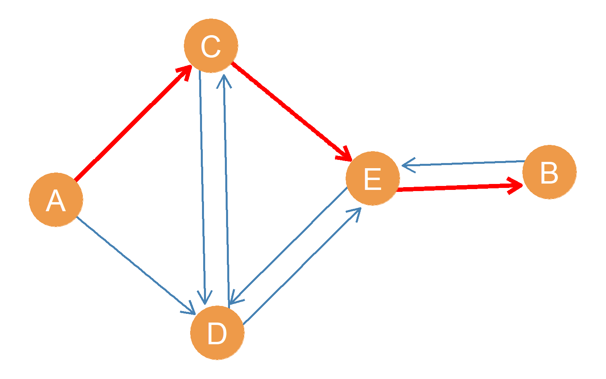
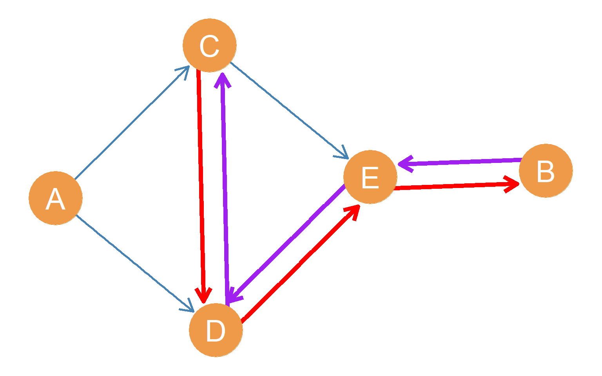
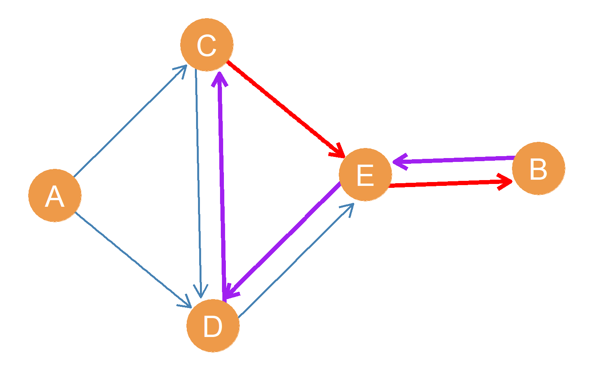

Directed Indirect Connections
What if the relationship we are studying is not symmetric, like a similarity or a co-location, but it is asymmetric, like an interaction or an exchange (e.g., communication or advice), and we need to represent the resulting network using a directed graph? How do indirect connections work in the directed case? Well, it’s just like in the undirected case we saw in ?@sec-indirect, but with a couple of differences.
First, we have to respect the direction of the path (follow the arrows).
Second, just like asymmetric ties in directed graphs, directed paths can be non-reciprocal.
That is, there can be a directed path between two nodes \(A\) and \(B\) where \(A\) is the origin node and \(B\) is the destination node, but that does not mean that there is a directed path going from \(B\) to \(A\), with \(B\) as the origin and \(A\) as the destination node.

Figure 1 illustrates this situation. The highlighted red path goes from origin node \(A\) to destination node \(B\). However, note that if we were to start with node \(B\) and try to get a message or a package to node \(A\), there is no way we could do it by a path of any length in this graph, as long as we are forced to follow the direction of the arrows.
That means that while node \(A\) can reach node \(B\) by a directed shortest path of \(l_{AB} = 3\), node \(B\) cannot reach node \(A\) (\(l_{BA} = \infty\)). The reachability relation in directed graphs is therefore asymmetric.

This also highlights another difference between undirected and directed graphs regarding reachability. In the undirected case, as we will see in a future lesson, the only way that a node cannot be reachable from other nodes in the graph is for the graph to be disconnected. In the directed case, a graph can be fully connected while some nodes are still incapable of reaching others.
Note that, as before, there can be multiple directed paths of a given length connecting two nodes. In the case of \(A\) and \(B\), there is at least one other path of length 3 with origin node \(A\) and destination node \(B\). Can you see it?

Also, like we saw in the lesson on paths, there can be directed paths of different lengths connecting pairs of nodes. For instance, Figure 2 shows a highlighted red path of length \(l_{AB} = 4\) with origin node \(A\) and destination node \(B\) and edges \((AD, DC, CE, EB)\). In the case of \(A\) and \(B\), there is at least one other path of length 4 with origin node \(A\) and destination node \(B\). Can you see it?

Directed Cycles
Just like in the undirected case, a directed path that begins and ends with the same node is called a directed cycle. We refer to different cycles by the number of directed edges they include. For instance, a 3-directed cycle is a directed cycle with three directed edges, a 4-directed cycle is a directed cycle with four edges, and so forth. For instance, in Figure 5, the directed 3-cycle with node \(C\) as both the origin and destination, involving the directed edges \((CE, ED, DC)\), is highlighted in red.
A directed graph that contains no cycles is a special kind of directed graph (composed of antisymmetric ties) called a directed acyclic graph.

Figure 6: A directed graph showing two weakly connected nodes A and B.